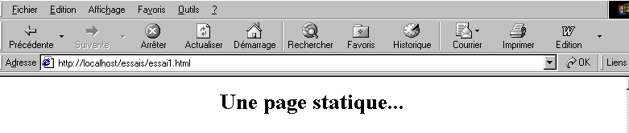
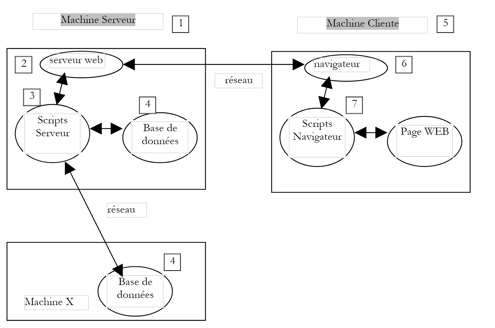
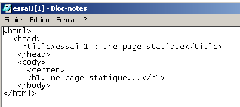
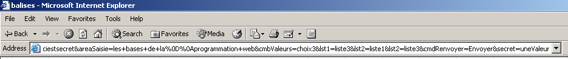

2. Les bases
Dans ce chapitre, nous présentons les bases de la programmation Web. Il a pour but essentiel de faire découvrir les grands principes de la programmation Web avant de mettre ceux-ci en pratique avec un langage et un environnement particuliers. Il présente de nombreux exemples qu'il est conseillé de tester afin de "s'imprégner" peu à peu de la philosophie du développement web.
2.1. Les composantes d'une application Web
 |
Numéro | Rôle | Exemples courants |
OS Serveur | Linux, Windows | |
Serveur Web | Apache (Linux, Windows) IIS (NT), PWS(Win9x) | |
Scripts exécutés côté serveur. Ils peuvent l'être par des modules du serveur ou par des programmes externes au serveur (CGI). | PERL (Apache, IIS, PWS) VBSCRIPT (IIS,PWS) JAVASCRIPT (IIS,PWS) PHP (Apache, IIS, PWS) JAVA (Apache, IIS, PWS) C#, VB.NET (IIS) | |
Base de données - Celle-ci peut être sur la même machine que le programme qui l'exploite ou sur une autre via Internet. | Oracle (Linux, Windows) MySQL (Linux, Windows) Access (Windows) SQL Server (Windows) | |
OS Client | Linux, Windows | |
Navigateur Web | Netscape, Internet Explorer | |
Scripts exécutés côté client au sein du navigateur. Ces scripts n'ont aucun accès aux disques du poste client. | VBscript (IE) Javascript (IE, Netscape) Perlscript (IE) Applets JAVA |
2.2. Les échanges de données dans une application web avec formulaire
 |
Numéro | Rôle |
Le navigateur demande une URL pour la 1ère fois (http://machine/url). Auncun paramètre n'est passé. | |
Le serveur Web lui envoie la page Web de cette URL. Elle peut être statique ou bien dynamiquement générée par un script serveur (SA) qui a pu utiliser le contenu de bases de données (SB, SC). Ici, le script détectera que l'URL a été demandée sans passage de paramètres et génèrera la page WEB initiale. Le navigateur reçoit la page et l'affiche (CA). Des scripts côté navigateur (CB) ont pu modifier la page initiale envoyée par le serveur. Ensuite par des interactions entre l'utilisateur (CD) et les scripts (CB) la page Web va être modifiée. Les formulaires vont notamment être remplis. | |
L'utilisateur valide les données du formulaire qui doivent alors être envoyées au serveur web. Le navigateur redemande l'URL initiale ou une autre selon les cas et transmet en même temps au serveur les valeurs du formulaire. Il peut utiliser pour ce faire deux méthodes appelées GET et POST. A réception de la demande du client, le serveur déclenche le script (SA) associé à l'URL demandée, script qui va détecter les paramètres et les traiter. | |
Le serveur délivre la page WEB construite par programme (SA, SB, SC). Cette étape est identique à l'étape 2 précédente. Les échanges se font désormais selon les étapes 2 et 3. |
2.3. Quelques ressources
Ci-dessous on trouvera une liste de ressources permettant d'installer et d'utiliser certains outils permettant de faire du développement web. On trouvera en annexe, une aide à l'installation de ces outils.
- Apache, Installation et Mise en œuvre, O'Reilly | |
- Programmation en Perl, Larry Wall, O'Reilly - Applications CGI en Perl, Neuss et Vromans, O'Reilly - la documentation HTML livrée avec Active Perl | |
- Prog. Web avec PHP, Lacroix, Eyrolles - Manuel d'utilisation de PHP récupérable sur le site de PHP | |
- Interface entre WEB et Base de données sous WinNT, Alex Homer, Eyrolles | |
- JAVA Servlets, Jason Hunter, O'Reilly - Programmation réseau avec Java, Elliotte Rusty Harold, O'Reilly - JDBC et Java, George Reese, O'reilly | |
- Le manuel de MySQL est disponible sur le site de MySQL - Oracle 8i sous Linux, Gilles Briard, Eyrolles - Oracle 8i sous NT, Gilles Briard, Eyrolles |
2.4. Notations
Dans la suite, nous supposerons qu'un certain nombre d'outils ont été installés et adopterons les notations suivantes :
notation | signification |
racine de l'arborescence du serveur apache | |
racine des pages Web délivrées par Apache. C'est sous cette racine que doivent se trouver les pages Web. Ainsi l'URL http://localhost/page1.htm correspond au fichier <apache-DocumentRoot>\page1.htm. | |
racine de l'arborescence lié à l'alias cgi-bin et où l'on peut placer des scripts CGI pour Apache. Ainsi l'URL http://localhost/cgi-bin/test1.pl correspond au fichier <apache-cgi-bin>\test1.pl. | |
racine des pages Web délivrées par PWS. C'est sous cette racine que doivent se trouver les pages Web. Ainsi l'URL http://localhost/page1.htm correspond au fichier <pws-DocumentRoot>\page1.htm. | |
racine de l'arborescence du langage Perl. L'exécutable perl.exe se trouve en général dans <perl>\bin. | |
racine de l'arborescence du langage PHP. L'exécutable php.exe se trouve en général dans <php>. | |
racine de l'arborescence de java. Les exécutables liés à java se trouvent dans <java>\bin. | |
racine du serveur Tomcat. On trouve des exemples de servlets dans <tomcat>\webapps\examples\servlets et des exemples de pages JSP dans <tomcat>\webbapps\examples\jsp |
On se reportera pour chacun de ces outils à l'annexe qui donne une aide pour leur installation.
2.5. Pages Web statiques, Pages Web dynamiques
Une page statique est représentée par un fichier HTML. Une page dynamique est, elle, générée "à la volée" par le serveur web. Nous vous proposons dans ce paragraphe divers tests avec différents serveurs web et différents langages de programmation afin de montrer l'universalité du concept web.
2.5.1. Page statique HTML (HyperText Markup Language)
Considérons le code HTML suivant :
<html>
<head>
<title>essai 1 : une page statique</title>
</head>
<body>
<center>
<h1>Une page statique...</h1>
</body>
</html>
qui produit la page web suivante :
Les tests

test1
- lancer le serveur Apache
- mettre le script essai1.html dans <apache-DocumentRoot>
- visualiser l’URL http://localhost/essai1.html avec un navigateur
- arrêter le serveur Apache
test2
- lancer le serveur PWS
- mettre le script essai1.html dans <pws-DocumentRoot>
- visualiser l’URL http://localhost/essai1.html avec un navigateur
2.5.2. Une page ASP (Active Server Pages)
Le script essai2.asp :
<html>
<head>
<title>essai 1 : une page asp</title>
</head>
<body>
<center>
<h1>Une page asp générée dynamiquement par le serveur PWS</h1>
<h2>Il est <% =time %></h2>
<br>
A chaque fois que vous rafraîchissez la page, l'heure change.
</body>
</html>
produit la page web suivante :

Le test
- lancer le serveur PWS
- mettre le script essai2.asp dans <pws-DocumentRoot>
- demander l’URL http://localhost/essai2.asp avec un navigateur
2.5.3. Un script PERL (Practical Extracting and Reporting Language)
Le script essai3.pl :
#!d:\perl\bin\perl.exe
($secondes,$minutes,$heure)=localtime(time);
print <<HTML
Content-type: text/html
<html>
<head>
<title>essai 1 : un script Perl</title>
</head>
<body>
<center>
<h1>Une page générée dynamiquement par un script Perl</h1>
<h2>Il est $heure:$minutes:$secondes</h2>
<br>
A chaque fois que vous rafraîchissez la page, l'heure change.
</body>
</html>
HTML
;
La première ligne est le chemin de l'exécutable perl.exe. Il faut l'adapter si besoin est. Une fois exécuté par un serveur Web, le script produit la page suivante :

Le test
- serveur Web : Apache
- pour information, visualisez le fichier de configuration srm.conf ou httpd.conf selon la version d'Apache dans <apache>\confs et rechercher la ligne parlant de cgi-bin afin de connaître le répertoire <apache-cgi-bin> dans lequel placer essai3.pl.
- mettre le script essai3.pl dans <apache-cgi-bin>
- demander l’url http://localhost/cgi-bin/essai3.pl
A noter qu’il faut davantage de temps pour avoir la page perl que la page asp. Ceci parce que le script Perl est exécuté par un interpréteur Perl qu’il faut charger avant qu’il puisse exécuter le script. Il ne reste pas en permanence en mémoire.
2.5.4. Un script PHP (Personal Home Page, HyperText Processor)
Le script essai4.php
<html>
<head>
<title>essai 4 : une page php</title>
</head>
<body>
<center>
<h1>Une page PHP générée dynamiquement</h1>
<h2>
<?
$maintenant=time();
echo date("j/m/y, h:i:s",$maintenant);
?>
</h2>
<br>
A chaque fois que vous rafraîchissez la page, l'heure change.
</body>
</html>
Le script précédent produit la page web suivante :
Les tests


-
consulter le fichier de configuration srm.conf ou httpd.conf d'Apache dans <Apache>\confs
-
pour information, vérifier les lignes de configuration de php
test1
-
lancer le serveur Apache
-
mettre essai4.php dans <apache-DocumentRoot>
-
demander l’URL http://localhost/essai4.php
test2
-
lancer le serveur PWS
-
pour information, vérifier la configuration de PWS à propos de php
-
mettre essai4.php dans <pws-DocumentRoot>\php
-
demander l'URL http://localhost/essai4.php
2.5.5. Un script JSP (Java Server Pages)
Le script heure.jsp
<% //programme Java affichant l'heure %>
<%@ page import="java.util.*" %>
<%
// code JAVA pour calculer l'heure
Calendar calendrier=Calendar.getInstance();
int heures=calendrier.get(Calendar.HOUR_OF_DAY);
int minutes=calendrier.get(Calendar.MINUTE);
int secondes=calendrier.get(Calendar.SECOND);
// heures, minutes, secondes sont des variables globales
// qui pourront être utilisées dans le code HTML
%>
<% // code HTML %>
<html>
<head>
<title>Page JSP affichant l'heure</title>
</head>
<body>
<center>
<h1>Une page JSP générée dynamiquement</h1>
<h2>Il est <%=heures%>:<%=minutes%>:<%=secondes%></h2>
<br>
<h3>A chaque fois que vous rechargez la page, l'heure change</h3>
</body>
</html>
Une fois exécuté par le serveur web, ce script produit la page suivante :

Les tests
- mettre le script heure.jsp dans <tomcat>\jakarta-tomcat\webapps\examples\jsp (Tomcat 3.x) ou dans <tomcat>\webapps\examples\jsp (Tomcat 4.x)
- lancer le serveur Tomcat
- demander l'URL http://localhost:8080/examples/jsp/heure.jsp
2.5.6. Conclusion
Les exemples précédents ont montré que :
- une page HTML pouvait être générée dynamiquement par un programme. C'est tout le sens de la programmation Web.
- que les langages et les serveurs web utilisés pouvaient être divers. Actuellement on observe les grandes tendances suivantes :
- les tandems Apache/PHP (Windows, Linux) et IIS/PHP (Windows)
- la technologie ASP.NET sur les plate-formes Windows qui associent le serveur IIS à un langage .NET (C#, VB.NET, ...)
- la technologie des servlets Java et pages JSP fonctionnant avec différents serveurs (Tomcat, Apache, IIS) et sur différentes plate-formes (Windows, Linux). C'est cette denière technologie qui sera plus particulièrement développée dans ce document.
2.6. Scripts côté navigateur
Une page HTML peut contenir des scripts qui seront exécutés par le navigateur. Les langages de script côté navigateur sont nombreux. En voici quelques-uns :
Langage | Navigateurs utilisables |
Vbscript | IE |
Javascript | IE, Netscape |
PerlScript | IE |
Java | IE, Netscape |
Prenons quelques exemples.
2.6.1. Une page Web avec un script Vbscript, côté navigateur
La page vbs1.html
<html>
<head>
<title>essai : une page web avec un script vb</title>
<script language="vbscript">
function reagir
alert "Vous avez cliqué sur le bouton OK"
end function
</script>
</head>
<body>
<center>
<h1>Une page Web avec un script VB</h1>
<table>
<tr>
<td>Cliquez sur le bouton</td>
<td><input type="button" value="OK" name="cmdOK" onclick="reagir"></td>
</tr>
</table>
</body>
</html>
La page HTML ci-dessus ne contient pas simplement du code HTML mais également un programme destiné à être exécuté par le navigateur qui aura chargé cette page. Le code est le suivant :
<script language="vbscript">
function reagir
alert "Vous avez cliqué sur le bouton OK"
end function
</script>
Les balises <script></script> servent à délimiter les scripts dans la page HTML. Ces scripts peuvent être écrits dans différents langages et c'est l'option language de la balise <script> qui indique le langage utilisé. Ici c'est VBScript. Nous ne chercherons pas à détailler ce langage. Le script ci-dessus définit une fonction appelée réagir qui affiche un message. Quand cette fonction est-elle appelée ? C'est la ligne de code HTML suivante qui nous l'indique :
L'attribut onclick indique le nom de la fonction à appeler lorsque l'utilisateur cliquera sur le bouton OK. Lorsque le navigateur aura chargé cette page et que l'utilisateur cliquera sur le bouton OK, on aura la page suivante :

Les tests
Seul le navigateur IE est capable d'exécuter des scripts VBScript. Netscape nécessite des compléments logiciels pour le faire. On pourra faire les tests suivants :
test1
- serveur Apache
- script vbs1.html dans <apache-DocumentRoot>
- demander l’url http://localhost/vbs1.html avec le navigateur IE
test2
- serveur PWS
- script vbs1.html dans <pws-DocumentRoot>
- demander l’url http://localhost/vbs1.html avec le navigateur IE
2.6.2. Une page Web avec un script Javascript, côté navigateur
La page : js1.html
<html>
<head>
<title>essai 4 : une page web avec un script Javascript</title>
<script language="javascript">
function reagir(){
alert ("Vous avez cliqué sur le bouton OK");
}
</script>
</head>
<body>
<center>
<h1>Une page Web avec un script Javascript</h1>
<table>
<tr>
<td>Cliquez sur le bouton</td>
<td><input type="button" value="OK" name="cmdOK" onclick="reagir()"></td>
</tr>
</table>
</body>
</html>
On a là quelque chose d'identique à la page précédente si ce n'est qu'on a remplacé le langage VBScript par le langage Javascript. Celui-ci présente l'avantage d'être accepté par les deux navigateurs IE et Netscape. Son exécution donne les mêmes résultats :

Les tests
test1
- serveur Apache
- script js1.html dans <apache-DocumentRoot>
- demander l’url http://localhost/js1.html avec le navigateur IE ou Netscape
test2
- serveur PWS
- script js1.html dans <pws-DocumentRoot>
- demander l’url http://localhost/js1.html avec le navigateur IE ou Netscape
2.7. Les échanges client-serveur
Revenons à notre schéma de départ qui illustrait les acteurs d'une application web :
 |
Nous nous intéressons ici aux échanges entre la machine cliente et la machine serveur. Ceux-ci se font au travers d'un réseau et il est bon de rappeler la structure générale des échanges entre deux machines distantes.
2.7.1. Le modèle OSI
Le modèle de réseau ouvert appelé OSI (Open Systems Interconnection Reference Model) défini par l'ISO (International Standards Organisation) décrit un réseau idéal où la communication entre machines peut être représentée par un modèle à sept couches :
 |
Chaque couche reçoit des services de la couche inférieure et offre les siens à la couche supérieure. Supposons que deux applications situées sur des machines A et B différentes veulent communiquer : elles le font au niveau de la couche Application. Elles n'ont pas besoin de connaître tous les détails du fonctionnement du réseau : chaque application remet l'information qu'elle souhaite transmettre à la couche du dessous : la couche Présentation. L'application n'a donc à connaître que les règles d'interfaçage avec la couche Présentation. Une fois l'information dans la couche Présentation, elle est passée selon d'autres règles à la couche Session et ainsi de suite, jusqu'à ce que l'information arrive sur le support physique et soit transmise physiquement à la machine destination. Là, elle subira le traitement inverse de celui qu'elle a subi sur la machine expéditeur.
A chaque couche, le processus expéditeur chargé d'envoyer l'information, l'envoie à un processus récepteur sur l'autre machine apartenant à la même couche que lui. Il le fait selon certaines règles que l'on appelle le protocole de la couche. On a donc le schéma de communication final suivant :
 |
Le rôle des différentes couches est le suivant :
Assure la transmission de bits sur un support physique. On trouve dans cette couche des équipements terminaux de traitement des données (E.T.T.D.) tels que terminal ou ordinateur, ainsi que des équipements de terminaison de circuits de données (E.T.C.D.) tels que modulateur/démodulateur, multiplexeur, concentrateur. Les points d'intérêt à ce niveau sont : . le choix du codage de l'information (analogique ou numérique) . le choix du mode de transmission (synchrone ou asynchrone). | |
Masque les particularités physiques de la couche Physique. Détecte et corrige les erreurs de transmission. | |
Gère le chemin que doivent suivre les informations envoyées sur le réseau. On appelle cela le routage : déterminer la route à suivre par une information pour qu'elle arrive à son destinataire. | |
Permet la communication entre deux applications alors que les couches précédentes ne permettaient que la communication entre machines. Un service fourni par cette couche peut être le multiplexage : la couche transport pourra utiliser une même connexion réseau (de machine à machine) pour transmettre des informations appartenant à plusieurs applications. | |
On va trouver dans cette couche des services permettant à une application d'ouvrir et de maintenir une session de travail sur une machine distante. | |
Elle vise à uniformiser la représentation des données sur les différentes machines. Ainsi des données provenant d'une machine A, vont être "habillées" par la couche Présentation de la machine A, selon un format standard avant d'être envoyées sur le réseau. Parvenues à la couche Présentation de la machine destinatrice B qui les reconnaîtra grâce à leur format standard, elles seront habillées d'une autre façon afin que l'application de la machine B les reconnaisse. | |
A ce niveau, on trouve les applications généralement proches de l'utilisateur telles que la messagerie électronique ou le transfert de fichiers. |
2.7.2. Le modèle TCP/IP
Le modèle OSI est un modèle idéal. La suite de protocoles TCP/IP s'en approche sous la forme suivante :
 |
- l'interface réseau (la carte réseau de l'ordinateur) assure les fonctions des couches 1 et 2 du modèle OSI
- la couche IP (Internet Protocol) assure les fonctions de la couche 3 (réseau)
- la couche TCP (Transfer Control Protocol) ou UDP (User Datagram Protocol) assure les fonctions de la couche 4 (transport). Le protocole TCP s'assure que les paquets de données échangés par les machines arrivent bien à destination. Si ce n'est pas les cas, il renvoie les paquets qui se sont égarés. Le protocole UDP ne fait pas ce travail et c'est alors au développeur d'applications de le faire. C'est pourquoi sur l'internet qui n'est pas un réseau fiable à 100%, c'est le protocole TCP qui est le plus utilisé. On parle alors de réseau TCP-IP.
- la couche Application recouvre les fonctions des niveaux 5 à 7 du modèle OSI.
Les applications web se trouvent dans la couche Application et s'appuient donc sur les protocoles TCP-IP. Les couches Application des machines clientes et serveur s'échangent des messages qui sont confiées aux couches 1 à 4 du modèle pour être acheminées à destination. Pour se comprendre, les couches application des deux machines doivent "parler" un même langage ou protocole. Celui des applications Web s'appelle HTTP (HyperText Transfer Protocol). C'est un protocole de type texte, c.a.d. que les machines échangent des lignes de texte sur le réseau pour se comprendre. Ces échanges sont normalisés, c.a.d. que le client dispose d'un certain nombre de messages pour indiquer exactement ce qu'il veut au serveur et ce dernier dispose également d'un certain nombre de messages pour donner au client sa réponse. Cet échange de messages a la forme suivante :
 |
Client --> Serveur
Lorsque le client fait sa demande au serveur web, il envoie
- des lignes de texte au format HTTP pour indiquer ce qu'il veut
- une ligne vide
- optionnellement un document
Serveur --> Client
Lorsque le serveur fait sa réponse au client, il envoie
- des lignes de texte au format HTTP pour indiquer ce qu'il envoie
- une ligne vide
- optionnellement un document
Les échanges ont donc la même forme dans les deux sens. Dans les deux cas, il peut y avoir envoi d'un document même s'il est rare qu'un client envoie un document au serveur. Mais le protocole HTTP le prévoit. C'est ce qui permet par exemple aux abonnés d'un fournisseur d'accès de télécharger des documents divers sur leur site personnel hébergé chez ce fournisseur d'accès. Les documents échangés peuvent être quelconques. Prenons un navigateur demandant une page web contenant des images :
- le navigateur se connecte au serveur web et demande la page qu'il souhaite. Les ressources demandées sont désignées de façon unique par des URL (Uniform Resource Locator). Le navigateur n'envoie que des entêtes HTTP et aucun document.
- le serveur lui répond. Il envoie tout d'abord des entêtes HTTP indiquant quel type de réponse il envoie. Ce peut être une erreur si la page demandée n'existe pas. Si la page existe, le serveur dira dans les entêtes HTTP de sa réponse qu'après ceux-ci il va envoyer un document HTML (HyperText Markup Language). Ce document est une suite de lignes de texte au format HTML. Un texte HTML contient des balises (marqueurs) donnant au navigateur des indications sur la façon d'afficher le texte.
- le client sait d'après les entêtes HTTP du serveur qu'il va recevoir un document HTML. Il va analyser celui-ci et s'apercevoir peut-être qu'il contient des références d'images. Ces dernières ne sont pas dans le document HTML. Il fait donc une nouvelle demande au même serveur web pour demander la première image dont il a besoin. Cette demande est identique à celle faite en 1, si ce n'est que la resource demandée est différente. Le serveur va traiter cette demande en envoyant à son client l'image demandée. Cette fois-ci, dans sa réponse, les entêtes HTTP préciseront que le document envoyé est une image et non un document HTML.
- le client récupère l'image envoyée. Les étapes 3 et 4 vont être répétées jusqu'à ce que le client (un navigateur en général) ait tous les documents lui permettant d'afficher l'intégralité de la page.
2.7.3. Le protocole HTTP
Découvrons le protocole HTTP sur des exemples. Que s'échangent un navigateur et un serveur web ?
2.7.3.1. La réponse d'un serveur HTTP
Nous allons découvrir ici comment un serveur web répond aux demandes de ses clients. Le service Web ou service HTTP est un service TCP-IP qui travaille habituellement sur le port 80. Il pourrait travailler sur un autre port. Dans ce cas, le navigateur client serait obligé de préciser ce port dans l'URL qu'il demande. Une URL a la forme générale suivante :
avec
protocole | http pour le service web. Un navigateur peut également servir de client à des services ftp, news, telnet, .. |
machine | nom de la machine où officie le service web |
port | port du service web. Si c'est 80, on peut omettre le n° du port. C'est le cas le plus fréquent |
chemin | chemin désignant la ressource demandée |
infos | informations complémentaires données au serveur pour préciser la demande du client |
Que fait un navigateur lorsqu'un utilisateur demande le chargement d'une URL ?
- il ouvre une communication TCP-IP avec la machine et le port indiqués dans la partie machine[:port] de l'URL. Ouvrir une communication TCP-IP, c'est créer un "tuyau" de communication entre deux machines. Une fois ce tuyau créé, toutes les informations échangées entre les deux machines vont passer dedans. La création de ce tuyau TCP-IP n'implique pas encore le protocole HTTP du Web.
- le tuyau TCP-IP créé, le client va faire sa demande au serveur Web et il va la faire en lui envoyant des lignes de texte (des commandes) au format HTTP. Il va envoyer au serveur la partie chemin/infos de l'URL
- le serveur lui répondra de la même façon et dans le même tuyau
- l'un des deux partenaires prendra la décision de fermer le tuyau. Cela dépend du protocole HTTP utilisé. Avec le protocole HTTP 1.0, le serveur ferme la connexion après chacune de ses réponses. Cela oblige un client qui doit faire plusieurs demandes pour obtenir les différents documents constituant une page web à ouvrir une nouvelle connexion à chaque demande, ce qui a un coût. Avec le protocole HTTP/1.1, le client peut dire au serveur de garder la connexion ouverte jusqu'à ce qu'il lui dise de la fermer. Il peut donc récupérer tous les documents d'une page web avec une seule connexion et fermer lui-même la connexion une fois le dernier document obtenu. Le serveur détectera cette fermeture et fermera lui aussi la connexion.
Pour découvrir les échanges entre un client et un serveur web, nous allons utiliser un client TCP générique. C'est un programme qui peut être client de tout service ayant un protocole de communication à base de lignes de texte comme c'est le cas du protocole HTTP. Ces lignes de texte seront tapées par l'utilisateur au clavier. Cela nécessite qu'il connaisse le protocole de communication du service qu'il cherche à atteindre. La réponse du serveur est ensuite affichée à l'écran. Le programme a été écrit en Java et on le trouvera en annexe. On l'utilise ici dans une fenêtre Dos sous windows et on l'appelle de la façon suivante :
avec
machine | nom de la machine où officie le service à contacter |
port | port où le service est délivré |
Avec ces deux informations, le programme va ouvrir une connexion TCP-IP avec la machine et le port désignés. Cette connexion va servir aux échanges de lignes de texte entre le client et le serveur web. Les lignes du client sont tapées par l'utilisateur au clavier et envoyées au serveur. Les lignes de texte renvoyées par le serveur comme réponse sont affichées à l'écran. Un dialogue peut donc s'instaurer directement entre l'utilisateur au clavier et le serveur web. Essayons sur les exemples déjà présentés. Nous avions créé la page HTML statique suivante :
<html>
<head>
<title>essai 1 : une page statique</title>
</head>
<body>
<center>
<h1>Une page statique...</h1>
</body>
</html>
que nous visualisons dans un navigateur :

On voit que l'URL demandée est : http://localhost:81/essais/essai1.html. La machine du service web est donc localhost (=machine locale) et le port 81. Si on demande à voir le texte HTML de cette page Web (Affichage/Source) on retrouve le texte HTML initialement créé :

Maintenant utilisons notre client TCP générique pour demander la même URL :
Dos>java clientTCPgenerique localhost 81
Commandes :
GET /essais/essai1.html HTTP/1.0
<-- HTTP/1.1 200 OK
<-- Date: Mon, 08 Jul 2002 08:07:46 GMT
<-- Server: Apache/1.3.24 (Win32) PHP/4.2.0
<-- Last-Modified: Mon, 08 Jul 2002 08:00:30 GMT
<-- ETag: "0-a1-3d29469e"
<-- Accept-Ranges: bytes
<-- Content-Length: 161
<-- Connection: close
<-- Content-Type: text/html
<--
<-- <html>
<-- <head>
<-- <title>essai 1 : une page statique</title>
<-- </head>
<-- <body>
<-- <center>
<-- <h1>Une page statique...</h1>
<-- </body>
<-- </html>
Au lancement du client par la commande java clientTCPgenerique localhost 81 un tuyau a été créé entre le programme et le serveur web opérant sur la même machine (localhost) et sur le port 81. Les échanges client-serveur au format HTTP peuvent commencer. Rappelons que ceux-ci ont trois composantes :
- entêtes HTTP
- ligne vide
- données facultatives
Dans notre exemple, le client n'envoie qu'une demande:
GET /essais/essai1.html HTTP/1.0
Cette ligne a trois composantes :
commande HTTP pour demander une ressource. Il en existe d'autres : HEAD demande une ressource mais en se limitant aux entêtes HTTP de la réponse du serveur. La ressource elle-même n'est pas envoyée. PUT permet au client d'envoyer un document au serveur | |
ressource demandée | |
niveau du protocole HTTP utilisé. Ici le 1.0. Cela signifie que le serveur fermera la connexion dès qu'il aura envoyé sa réponse |
Les entêtes HTTP doivent toujours être suivis d'une ligne vide. C'est ce qui a été fait ici par le client. C'est comme cela que le client ou le serveur sait que la partie HTTP de l'échange est terminé. Ici pour le client c'est terminé. Il n'a pas de document à envoyer. Commence alors la réponse du serveur composée dans notre exemple de toutes les lignes commençant par le signe <--. Il envoie d'abord une série d'entêtes HTTP suivie d'une ligne vide :
<-- HTTP/1.1 200 OK
<-- Date: Mon, 08 Jul 2002 08:07:46 GMT
<-- Server: Apache/1.3.24 (Win32) PHP/4.2.0
<-- Last-Modified: Mon, 08 Jul 2002 08:00:30 GMT
<-- ETag: "0-a1-3d29469e"
<-- Accept-Ranges: bytes
<-- Content-Length: 161
<-- Connection: close
<-- Content-Type: text/html
<--
le serveur dit
| |
la date/heure de la réponse | |
le serveur s'identifie. Ici c'est un serveur Apache | |
date de dernière modification de la ressource demandée par le client | |
... | |
unité de mesure des données envoyées. Ici l'octet (byte) | |
nombre de bytes du document qui va être envoyé après les entêtes HTTP. Ce nombre est en fait la taille en octets du fichier essai1.html : | |
le serveur dit qu'il fermera la connexion une fois le document envoyé | |
le serveur dit qu'il va envoyer du texte (text) au format HTML (html). |
Le client reçoit ces entêtes HTTP et sait maintenant qu'il va recevoir 161 octets représentant un document HTML. Le serveur envoie ces 161 octets immédiatement derrière la ligne vide qui signalait la fin des entêtes HTTP :
<-- <html>
<-- <head>
<-- <title>essai 1 : une page statique</title>
<-- </head>
<-- <body>
<-- <center>
<-- <h1>Une page statique...</h1>
<-- </body>
<-- </html>
On reconnaît là, le fichier HTML construit initialement. Si notre client était un navigateur, après réception de ces lignes de texte, il les interpréterait pour présenter à l'utilisateur au clavier la page suivante :

Utilisons une nouvelle fois notre client TCP générique pour demander la même ressource mais cette fois-ci avec la commande HEAD qui demande seulement les entêtes de la réponse :
Dos>java.bat clientTCPgenerique localhost 81
Commandes :
HEAD /essais/essai1.html HTTP/1.1
Host: localhost:81
<-- HTTP/1.1 200 OK
<-- Date: Mon, 08 Jul 2002 09:07:25 GMT
<-- Server: Apache/1.3.24 (Win32) PHP/4.2.0
<-- Last-Modified: Mon, 08 Jul 2002 08:00:30 GMT
<-- ETag: "0-a1-3d29469e"
<-- Accept-Ranges: bytes
<-- Content-Length: 161
<-- Content-Type: text/html
<--
Nous obtenons le même résultat que précédemment sans le document HTML. Notons que dans sa demande HEAD, le client a indiqué qu'il utilisait le protocole HTTP version 1.1. Cela l'oblige à envoyer un second entête HTTP précisant le couple machine:port que le client veut interroger : Host: localhost:81.
Maintenant demandons une image aussi bien avec un navigateur qu'avec le client TCP générique. Tout d'abord avec un navigateur :

Le fichier univ01.gif a 3167 octets :
Utilisons maintenant le client TCP générique :
E:\data\serge\JAVA\SOCKETS\client générique>java clientTCPgenerique localhost 81
Commandes :
HEAD /images/univ01.gif HTTP/1.1
host: localhost:81
<-- HTTP/1.1 200 OK
<-- Date: Tue, 09 Jul 2002 13:53:24 GMT
<-- Server: Apache/1.3.24 (Win32) PHP/4.2.0
<-- Last-Modified: Fri, 14 Apr 2000 11:37:42 GMT
<-- ETag: "0-c5f-38f70306"
<-- Accept-Ranges: bytes
<-- Content-Length: 3167
<-- Content-Type: image/gif
<--
On notera les points suivants dans la réponse du serveur :
| |
| |
|
2.7.3.2. La demande d'un client HTTP
Maintenant, posons-nous la question suivante : si nous voulons écrire un programme qui "parle" à un serveur web, quelles commandes doit-il envoyer au serveur web pour obtenir une ressource donnée ? Nous avons dans les exemples précédents obtenu un début de réponse. Nous avons rencontré trois commandes :
| |
| |
|
Il existe d'autres commandes. Pour les découvrir, nous allons maintenant utiliser un serveur TCP générique. C'est un programme écrit en Java et que vous trouverez lui aussi en annexe. Il est lancé par : java serveurTCPgenerique portEcoute, où portEcoute est le port sur lequel les clients doivent se connecter. Le programme serveurTCPgenerique
- affiche à l'écran les commandes envoyées par les clients
- leur envoie comme réponse les lignes de texte tapées au clavier par un utilisateur. C'est donc ce dernier qui fait office de serveur. Dans notre exemple, l'utilisateur au clavier jouera le rôle d'un service web.
Simulons maintenant un serveur web en lançant notre serveur générique sur le port 88 :
Dos> java serveurTCPgenerique 88
Serveur générique lancé sur le port 88
Prenons maintenant un navigateur et demandons l'URL http://localhost:88/exemple.html. Le navigateur va alors se connecter sur le port 88 de la machine localhost puis demander la page /exemple.html :

Regardons maintenant la fenêtre de notre serveur qui affiche ce que le client lui a envoyé (certaines lignes spécifiques au fonctionnement du programme serveurTCPgenerique ont été omises par souci de simplification) :
Dos>java serveurTCPgenerique 88
Serveur générique lancé sur le port 88
...
<-- GET /exemple.html HTTP/1.1
<-- Accept: image/gif, image/x-xbitmap, image/jpeg, image/pjpeg, application/msword, */*
<-- Accept-Language: fr
<-- Accept-Encoding: gzip, deflate
<-- User-Agent: Mozilla/4.0 (compatible; MSIE 6.0; Windows NT 5.0; .NET CLR 1.0.3705; .NET CLR 1.0.2 914)
<-- Host: localhost:88
<-- Connection: Keep-Alive
<--
Les lignes précédées du signe <-- sont celles envoyées par le client. On découvre ainsi des entêtes HTTP que nous n'avions pas encore rencontrés :
| |
| |
| |
| |
|
Les entêtes HTTP envoyés par le navigateur se terminent par une ligne vide comme attendu.
Elaborons une réponse à notre client. L'utilisateur au clavier est ici le véritable serveur et il peut élaborer une réponse à la main. Rappelons-nous la réponse faite par un serveur Web dans un précédent exemple :
<-- HTTP/1.1 200 OK
<-- Date: Mon, 08 Jul 2002 08:07:46 GMT
<-- Server: Apache/1.3.24 (Win32) PHP/4.2.0
<-- Last-Modified: Mon, 08 Jul 2002 08:00:30 GMT
<-- ETag: "0-a1-3d29469e"
<-- Accept-Ranges: bytes
<-- Content-Length: 161
<-- Connection: close
<-- Content-Type: text/html
<--
<-- <html>
<-- <head>
<-- <title>essai 1 : une page statique</title>
<-- </head>
<-- <body>
<-- <center>
<-- <h1>Une page statique...</h1>
<-- </body>
<-- </html>
Essayons d'élaborer à la main (au clavier) une réponse analogue. Les lignes commençant par --> : sont envoyées au client :
...
<-- Host: localhost:88
<-- Connection: Keep-Alive
<--
--> : HTTP/1.1 200 OK
--> : Server: serveur tcp generique
--> : Connection: close
--> : Content-Type: text/html
--> :
--> : <html>
--> : <head><title>Serveur generique</title></head>
--> : <body>
--> : <center>
--> : <h2>Reponse du serveur generique</h2>
--> : </center>
--> : </body>
--> : </html>
fin
La commande fin est propre au fonctionnement du programme serveurTCPgenerique. Elle arrête l'exécution du programme et clôt la connexion du serveur au client. Nous nous sommes limités dans notre réponse aux entêtes HTTP suivants :
HTTP/1.1 200 OK
--> : Server: serveur tcp generique
--> : Connection: close
--> : Content-Type: text/html
--> :
Nous ne donnons pas la taille du fichier que nous allons envoyer (Content-Length) mais nous contentons de dire que nous allons fermer la connexion (Connection: close) après envoi de celui-ci. Cela est suffisant pour le navigateur. En voyant la connexion fermée, il saura que la réponse du serveur est terminée et affichera la page HTML qui lui a été envoyée. Cette dernière est la suivante :
--> : <html>
--> : <head><title>Serveur generique</title></head>
--> : <body>
--> : <center>
--> : <h2>Reponse du serveur generique</h2>
--> : </center>
--> : </body>
--> : </html>
Le navigateur affiche alors la page suivante :

Si ci-dessus, on fait View/Source pour voir ce qu'a reçu le navigateur, on obtient :

c'est à dire exactement ce qu'on a envoyé depuis le serveur générique.
2.8. Le langage HTML
Un navigateur Web peut afficher divers documents, le plus courant étant le document HTML (HyperText Markup Language). Celui-ci est un texte formaté avec des balises de la forme <balise>texte</balise>. Ainsi le texte <B>important</B> affichera le texte important en gras. Il existe des balises seules telles que la balise <hr> qui affiche une ligne horizontale. Nous ne passerons pas en revue les balises que l'on peut trouver dans un texte HTML. Il existe de nombreux logiciels WYSIWYG permettant de construire une page web sans écrire une ligne de code HTML. Ces outils génèrent automatiquement le code HTML d'une mise en page faite à l'aide de la souris et de contrôles prédéfinis. On peut ainsi insérer (avec la souris) dans la page un tableau puis consulter le code HTML généré par le logiciel pour découvrir les balises à utiliser pour définir un tableau dans une page Web. Ce n'est pas plus compliqué que cela. Par ailleurs, la connaissance du langage HTML est indispensable puisque les applications web dynamiques doivent générer elles-mêmes le code HTML à envoyer aux clients web. Ce code est généré par programme et il faut bien sûr savoir ce qu'il faut générer pour que le client ait la page web qu'il désire.
Pour résumer, il n'est nul besoin de connaître la totalité du langage HTML pour démarrer la programmation Web. Cependant cette connaissance est nécessaire et peut être acquise au travers de l'utilisation de logiciels WYSIWYG de construction de pages Web tels que Word, FrontPage, DreamWeaver et des dizaines d'autres. Une autre façon de découvrir les subtilités du langage HTML est de parcourir le web et d'afficher le code source des pages qui présentent des caractéristiques intéressantes et encore inconnues pour vous.
2.8.1. Un exemple
Considérons l'exemple suivant, créé avec FrontPage Express, un outil gratuit livré avec Internet Explorer. Le code généré par Frontpage a été ici épuré. Cet exemple présente quelques éléments qu'on peut trouver dans un document web tels que :
- un tableau
- une image
- un lien

Un document HTML a la forme générale suivante :
L'ensemble du document est encadré par les balises <html>...</html>. Il est formé de deux parties :
- <head>...</head> : c'est la partie non affichable du document. Elle donne des renseignements au navigateur qui va afficher le document. On y trouve souvent la balise <title>...</title> qui fixe le texte qui sera affiché dans la barre de titre du navigateur. On peut y trouver d'autres balises notamment des balises définissant les mots clés du document, mot clés utilisés ensuite par les moteurs de recherche. On peut trouver également dans cette partie des scripts, écrits le plus souvent en javascript ou vbscript et qui seront exécutés par le navigateur.
- <body attributs>...</body> : c'est la partie qui sera affichée par le navigateur. Les balises HTML contenues dans cette partie indiquent au navigateur la forme visuelle "souhaitée" pour le document. Chaque navigateur va interpréter ces balises à sa façon. Deux navigateurs peuvent alors visualiser différemment un même document web. C'est généralement l'un des casse-têtes des concepteurs web.
Le code HTML de notre document exemple est le suivant :
<html>
<head>
<title>balises</title>
</head>
<body background="/images/standard.jpg">
<center>
<h1>Les balises HTML</h1>
<hr>
</center>
<table border="1">
<tr>
<td>cellule(1,1)</td>
<td valign="middle" align="center" width="150">cellule(1,2)</td>
<td>cellule(1,3)</td>
</tr>
<tr>
<td>cellule(2,1)</td>
<td>cellule(2,2)</td>
<td>cellule(2,3</td>
</tr>
</table>
<table border="0">
<tr>
<td>Une image</td>
<td><img border="0" src="/images/univ01.gif" width="80" height="95"></td>
</tr>
<tr>
<td>le site de l'ISTIA</td>
<td><a href="http://istia.univ-angers.fr">ici</a></td>
</tr>
</table>
</body>
</html>
Ont été mis en relief dans le code les seuls points qui nous intéressent :
Elément | balises et exemples HTML |
<title>balises</title> balises apparaîtra dans la barre de titre du navigateur qui affichera le document | |
<hr> : affiche un trait horizontal | |
<table attributs>....</table> : pour définir le tableau <tr attributs>...</tr> : pour définir une ligne <td attributs>...</td> : pour définir une cellule exemples : <table border="1">...</table> : l'attribut border définit l'épaisseur de la bordure du tableau <td valign="middle" align="center" width="150">cellule(1,2)</td> : définit une cellule dont le contenu sera cellule(1,2). Ce contenu sera centré verticalement (valign="middle") et horizontalement (align="center"). La cellule aura une largeur de 150 pixels (width="150") | |
<img border="0" src="/images/univ01.gif" width="80" height="95"> : définit une image sans bordure (border=0"), de hauteur 95 pixels (height="95"), de largeur 80 pixels (width="80") et dont le fichier source est /images/univ01.gif sur le serveur web (src="/images/univ01.gif"). Ce lien se trouve sur un document web qui a été obtenu avec l'URL http://localhost:81/html/balises.htm. Aussi, le navigateur demandera-t-il l'URL http://localhost:81/images/univ01.gif pour avoir l'image référencée ici. | |
<a href="http://istia.univ-angers.fr">ici</a> : fait que le texte ici sert de lien vers l'URL http://istia.univ-angers.fr. | |
<body background="/images/standard.jpg"> : indique que l'image qui doit servir de fond de page se trouve à l'URL /images/standard.jpg du serveur web. Dans le contexte de notre exemple, le navigateur demandera l'URL http://localhost:81/images/standard.jpg pour obtenir cette image de fond. |
On voit dans ce simple exemple que pour construire l'intéralité du document, le navigateur doit faire trois requêtes au serveur :
- http://localhost:81/html/balises.htm pour avoir le source HTML du document
- http://localhost:81/images/univ01.gif pour avoir l'image univ01.gif
- http://localhost:81/images/standard.jpg pour obtenir l'image de fond standard.jpg
L'exemple suivant présente un formulaire Web créé lui aussi avec FrontPage.

Le code HTML généré par FrontPage et un peu épuré est le suivant :
<html>
<head>
<title>balises</title>
<script language="JavaScript">
function effacer(){
alert("Vous avez cliqué sur le bouton Effacer");
}//effacer
</script>
</head>
<body background="/images/standard.jpg">
<form method="POST" >
<table border="0">
<tr>
<td>Etes-vous marié(e)</td>
<td>
<input type="radio" value="Oui" name="R1">Oui
<input type="radio" name="R1" value="non" checked>Non
</td>
</tr>
<tr>
<td>Cases à cocher</td>
<td>
<input type="checkbox" name="C1" value="un">1
<input type="checkbox" name="C2" value="deux" checked>2
<input type="checkbox" name="C3" value="trois">3
</td>
</tr>
<tr>
<td>Champ de saisie</td>
<td>
<input type="text" name="txtSaisie" size="20" value="qqs mots">
</td>
</tr>
<tr>
<td>Mot de passe</td>
<td>
<input type="password" name="txtMdp" size="20" value="unMotDePasse">
</td>
</tr>
<tr>
<td>Boîte de saisie</td>
<td>
<textarea rows="2" name="areaSaisie" cols="20">
ligne1
ligne2
ligne3
</textarea>
</td>
</tr>
<tr>
<td>combo</td>
<td>
<select size="1" name="cmbValeurs">
<option>choix1</option>
<option selected>choix2</option>
<option>choix3</option>
</select>
</td>
</tr>
<tr>
<td>liste à choix simple</td>
<td>
<select size="3" name="lst1">
<option selected>liste1</option>
<option>liste2</option>
<option>liste3</option>
<option>liste4</option>
<option>liste5</option>
</select>
</td>
</tr>
<tr>
<td>liste à choix multiple</td>
<td>
<select size="3" name="lst2" multiple>
<option>liste1</option>
<option>liste2</option>
<option selected>liste3</option>
<option>liste4</option>
<option>liste5</option>
</select>
</td>
</tr>
<tr>
<td>bouton</td>
<td>
<input type="button" value="Effacer" name="cmdEffacer" onclick="effacer()">
</td>
</tr>
<tr>
<td>envoyer</td>
<td>
<input type="submit" value="Envoyer" name="cmdRenvoyer">
</td>
</tr>
<tr>
<td>rétablir</td>
<td>
<input type="reset" value="Rétablir" name="cmdRétablir">
</td>
</tr>
</table>
<input type="hidden" name="secret" value="uneValeur">
</form>
</body>
</html>
L'association contrôle visuel <--> balise HTML est le suivant :
Contrôle | balise HTML |
<form method="POST" > | |
<input type="text" name="txtSaisie" size="20" value="qqs mots"> | |
<input type="password" name="txtMdp" size="20" value="unMotDePasse"> | |
<textarea rows="2" name="areaSaisie" cols="20"> ligne1 ligne2 ligne3 </textarea> | |
<input type="radio" value="Oui" name="R1">Oui <input type="radio" name="R1" value="non" checked>Non | |
<input type="checkbox" name="C1" value="un">1 <input type="checkbox" name="C2" value="deux" checked>2 <input type="checkbox" name="C3" value="trois">3 | |
<select size="1" name="cmbValeurs"> <option>choix1</option> <option selected>choix2</option> <option>choix3</option> </select> | |
<select size="3" name="lst1"> <option selected>liste1</option> <option>liste2</option> <option>liste3</option> <option>liste4</option> <option>liste5</option> </select> | |
<select size="3" name="lst2" multiple> <option>liste1</option> <option>liste2</option> <option selected>liste3</option> <option>liste4</option> <option>liste5</option> </select> | |
<input type="submit" value="Envoyer" name="cmdRenvoyer"> | |
<input type="reset" value="Rétablir" name="cmdRétablir"> | |
<input type="button" value="Effacer" name="cmdEffacer" onclick="effacer()"> |
Passons en revue ces différents contrôles.
2.8.1.1. Le formulaire
<form method="POST" > |
<form name="..." method="..." action="...">...</form> | |
name="frmexemple" : nom du formulaire method="..." : méthode utilisée par le navigateur pour envoyer au serveur web les valeurs récoltées dans le formulaire action="..." : URL à laquelle seront envoyées les valeurs récoltées dans le formulaire. Un formulaire web est entouré des balises <form>...</form>. Le formulaire peut avoir un nom (name="xx"). C'est le cas pour tous les contrôles qu'on peut trouver dans un formulaire. Ce nom est utile si le document web contient des scripts qui doivent référencer des éléments du formulaire. Le but d'un formulaire est de rassembler des informations données par l'utilisateur au clavier/souris et d'envoyer celles-ci à une URL de serveur web. Laquelle ? Celle référencée dans l'attribut action="URL". Si cet attribut est absent, les informations seront envoyées à l'URL du document dans lequel se trouve le formulaire. Ce serait le cas dans l'exemple ci-dessus. Jusqu'à maintenant, nous avons toujours vu le client web comme "demandant" des informations à un serveur web, jamais lui "donnant" des informations. Comment un client web fait-il pour donner des informations (celles contenues dans le formulaire) à un serveur web ? Nous y reviendrons dans le détail un peu plus loin. Il peut utiliser deux méthodes différentes appelées POST et GET. L'attribut method="méthode", avec méthode égale à GET ou POST, de la balise <form> indique au navigateur la méthode à utiliser pour envoyer les informations recueillies dans le formulaire à l'URL précisée par l'attribut action="URL". Lorsque l'attribut method n'est pas précisé, c'est la méthode GET qui est prise par défaut. |
2.8.1.2. Champ de saisie


<input type="text" name="txtSaisie" size="20" value="qqs mots"> <input type="password" name="txtMdp" size="20" value="unMotDePasse"> |
<input type="..." name="..." size=".." value=".."> La balise input existe pour divers contrôles. C'est l'attribut type qui permet de différentier ces différents contrôles entre eux. | |
type="text" : précise que c'est un champ de saisie type="password" : les caractères présents dans le champ de saisie sont remplacés par des caractères *. C'est la seule différence avec le champ de saisie normal. Ce type de contrôle convient pour la saisie des mots de passe. size="20" : nombre de caractères visibles dans le champ - n'empêche pas la saisie de davantage de caractères name="txtSaisie" : nom du contrôle value="qqs mots" : texte qui sera affiché dans le champ de saisie. |
2.8.1.3. Champ de saisie multilignes

<textarea rows="2" name="areaSaisie" cols="20"> ligne1 ligne2 ligne3 </textarea> |
<textarea ...>texte</textarea> affiche une zone de saisie multilignes avec au départ texte dedans | |
rows="2" : nombre de lignes cols="'20" : nombre de colonnes name="areaSaisie" : nom du contrôle |
2.8.1.4. Boutons radio

<input type="radio" value="Oui" name="R1">Oui <input type="radio" name="R1" value="non" checked>Non |
<input type="radio" attribut2="valeur2" ....>texte affiche un bouton radio avec texte à côté. | |
name="radio" : nom du contrôle. Les boutons radio portant le même nom forment un groupe de boutons exclusifs les uns des autres : on ne peut cocher que l'un d'eux. value="valeur" : valeur affectée au bouton radio. Il ne faut pas confondre cette valeur avec le texte affiché à côté du bouton radio. Celui-ci n'est destiné qu'à l'affichage. checked : si ce mot clé est présent, le bouton radio est coché, sinon il ne l'est pas. |
2.8.1.5. Cases à cocher
<input type="checkbox" name="C1" value="un">1 <input type="checkbox" name="C2" value="deux" checked>2 <input type="checkbox" name="C3" value="trois">3 |

<input type="checkbox" attribut2="valeur2" ....>texte affiche une case à cocher avec texte à côté. | |
name="C1" : nom du contrôle. Les cases à cocher peuvent porter ou non le même nom. Les cases portant le même nom forment un groupe de cases associées. value="valeur" : valeur affectée à la case à cocher. Il ne faut pas confondre cette valeur avec le texte affiché à côté du bouton radio. Celui-ci n'est destiné qu'à l'affichage. checked : si ce mot clé est présent, le bouton radio est coché, sinon il ne l'est pas. |
2.8.1.6. Liste déroulante (combo)
<select size="1" name="cmbValeurs"> <option>choix1</option> <option selected>choix2</option> <option>choix3</option> </select> |

<select size=".." name=".."> <option [selected]>...</option> ... </select> affiche dans une liste les textes compris entre les balises <option>...</option> | |
name="cmbValeurs" : nom du contrôle. size="1" : nombre d'éléments de liste visibles. size="1" fait de la liste l'équivalent d'un combobox. selected : si ce mot clé est présent pour un élément de liste, ce dernier apparaît sélectionné dans la liste. Dans notre exemple ci-dessus, l'élément de liste choix2 apparaît comme l'élément sélectionné du combo lorsque celui-ci est affiché pour la première fois. |
2.8.1.7. Liste à sélection unique
<select size="3" name="lst1"> <option selected>liste1</option> <option>liste2</option> <option>liste3</option> <option>liste4</option> <option>liste5</option> </select> |

<select size=".." name=".."> <option [selected]>...</option> ... </select> affiche dans une liste les textes compris entre les balises <option>...</option> | |
les mêmes que pour la liste déroulante n'affichant qu'un élément. Ce contrôle ne diffère de la liste déroulante précédente que par son attribut size>1. |
2.8.1.8. Liste à sélection multiple
<select size="3" name="lst2" multiple> <option selected>liste1</option> <option>liste2</option> <option selected>liste3</option> <option>liste4</option> <option>liste5</option> </select> |

<select size=".." name=".." multiple> <option [selected]>...</option> ... </select> affiche dans une liste les textes compris entre les balises <option>...</option> | |
multiple : permet la sélection de plusieurs éléments dans la liste. Dans l'exemple ci-dessus, les éléments liste1 et liste3 sont tous deux sélectionnés. |
2.8.1.9. Bouton de type button
<input type="button" value="Effacer" name="cmdEffacer" onclick="effacer()"> |

<input type="button" value="..." name="..." onclick="effacer()" ....> | |
type="button" : définit un contrôle bouton. Il existe deux autres types de bouton, les types submit et reset. value="Effacer" : le texte affiché sur le bouton onclick="fonction()" : permet de définir une fonction à exécuter lorsque l'utilisateur clique sur le bouton. Cette fonction fait partie des scripts définis dans le document web affiché. La syntaxe précédente est une syntaxe javascript. Si les scripts sont écrits en vbscript, il faudrait écrire onclick="fonction" sans les parenthèses. La syntaxe devient identique s'il faut passer des paramètres à la fonction : onclick="fonction(val1, val2,...)" Dans notre exemple, un clic sur le bouton Effacer appelle la fonction javascript effacer suivante : La fonction effacer affiche un message :  |
2.8.1.10. Bouton de type submit
<input type="submit" value="Envoyer" name="cmdRenvoyer"> |

<input type="submit" value="Envoyer" name="cmdRenvoyer"> | |
type="submit" : définit le bouton comme un bouton d'envoi des données du formulaire au serveur web. Lorsque le client va cliquer sur ce bouton, le navigateur va envoyer les données du formulaire à l'URL définie dans l'attribut action de la balise <form> selon la méthode définie par l'attribut method de cette même balise. value="Envoyer" : le texte affiché sur le bouton |
2.8.1.11. Bouton de type reset
<input type="reset" value="Rétablir" name="cmdRétablir"> |

<input type="reset" value="Rétablir" name="cmdRétablir"> | |
type="reset" : définit le bouton comme un bouton de réinitialisation du formulaire. Lorsque le client va cliquer sur ce bouton, le navigateur va remettre le formulaire dans l'état où il l'a reçu. value="Rétablir" : le texte affiché sur le bouton |
2.8.1.12. Champ caché
<input type="hidden" name="secret" value="uneValeur"> |
<input type="hidden" name="..." value="..."> | |
type="hidden" : précise que c'est un champ caché. Un champ caché fait partie du formulaire mais n'est pas présenté à l'utilisateur. Cependant, si celui-ci demandait à son navigateur l'affichage du code source, il verrait la présence de la balise <input type="hidden" value="..."> et donc la valeur du champ caché. value="uneValeur" : valeur du champ caché. Quel est l'intérêt du champ caché ? Cela peut permettre au serveur web de garder des informations au fil des requêtes d'un client. Considérons une application d'achats sur le web. Le client achète un premier article art1 en quantité q1 sur une première page d'un catalogue puis passe à une nouvelle page du catalogue. Pour se souvenir que le client a acheté q1 articles art1, le serveur peut mettre ces deux informations dans un champ caché du formulaire web de la nouvelle page. Sur cette nouvelle page, le client achète q2 articles art2. Lorsque les données de ce second formulaire vont être envoyées au serveur (submit), celui-ci va non seulement recevoir l'information (q2,art2) mais aussi (q1,art1) qui fait partie également partie du formulaire en tant que champ caché non modifiable par l'utilisateur. Le serveur web va alors mettre dans un nouveau champ caché les informations (q1,art1) et (q2,art2) et envoyer une nouvelle page de catalogue. Et ainsi de suite. |
2.8.2. Envoi à un serveur web par un client web des valeurs d'un formulaire
Nous avons dit dans l'étude précédente que le client web disposait de deux méthodes pour envoyer à un serveur web les valeurs d'un formulaire qu'il a affiché : les méthodes GET et POST. Voyons sur un exemple la différence entre les deux méthodes. Nous reprenons l'exemple précédent et le traitons de la façon suivante :
- un navigateur demande l'URL de l'exemple à un serveur web
- une fois le formulaire obtenu, nous le remplissons
- avant d'envoyer les valeurs du formulaire au serveur web en cliquant sur le bouton Envoyer de type submit, nous arrêtons le serveur web et le remplaçons par le serveur TCP générique déjà utilisé précédemment. Rappelons que celui-ci affiche à l'écran les lignes de texte que lui envoie le client web. Ainsi nous verrons ce qu'envoie exactement le navigateur.
Le formulaire est rempli de la façon suivante :

L'URL utilisée pour ce document est la suivante :

2.8.2.1. Méthode GET
Le document HTML est programmé pour que le navigateur utilise la méthode GET pour envoyer les valeurs du formulaire au serveur web. Nous avons donc écrit :
Nous arrêtons le serveur web et lançons notre serveur TCP générique sur le port 81 :
E:\data\serge\JAVA\SOCKETS\serveur générique>java serveurTCPgenerique 81
Serveur générique lancé sur le port 81
Maintenant, nous revenons dans notre navigateur pour envoyer les données du formulaire au serveur web à l'aide du bouton Envoyer :

Voici alors ce que reçoit le serveur TCP générique :
<-- GET /html/balises.htm?R1=Oui&C1=un&C2=deux&txtSaisie=programmation+web&txtMdp=ceciestsecret&area
Saisie=les+bases+de+la%0D%0Aprogrammation+web&cmbValeurs=choix3&lst1=liste3&lst2=liste1&lst2=liste3&
cmdRenvoyer=Envoyer&secret=uneValeur HTTP/1.1
<-- Accept: image/gif, image/x-xbitmap, image/jpeg, image/pjpeg, application/msword, application/vnd
.ms-powerpoint, application/vnd.ms-excel, */*
<-- Referer: http://localhost:81/html/balises.htm
<-- Accept-Language: fr
<-- Accept-Encoding: gzip, deflate
<-- User-Agent: Mozilla/4.0 (compatible; MSIE 6.0; Windows NT 5.0; .NET CLR 1.0.3705)
<-- Host: localhost:81
<-- Connection: Keep-Alive
<--
Tout est dans le premier entête HTTP envoyé par le navigateur :
<-- GET /html/balises.htm?R1=Oui&C1=un&C2=deux&txtSaisie=programmation+web&txtMdp=ceciestsecret&area
Saisie=les+bases+de+la%0D%0Aprogrammation+web&cmbValeurs=choix3&lst1=liste3&lst2=liste1&lst2=liste3&
cmdRenvoyer=Envoyer&secret=uneValeur HTTP/1.1
On voit qu'il est beaucoup plus complexe que ce qui avait été rencontré jusqu'à maintenant. On y retrouve la syntaxe GET URL HTTP/1.1 mais sous une forme particulière GET URL?param1=valeur1¶m2=valeur2&... HTTP/1.1 où les parami sont les noms des contrôles du formulaire web et valeuri les valeurs qui leur sont associées. Examinons-les de plus près. Nous présentons ci-dessous un tableau à trois colonnes :
- colonne 1 : reprend la définition d'un contrôle HTML de l'exemple
- colonne 2 : donne l'affichage de ce contrôle dans un navigateur
- colonne 3 : donne la valeur envoyée au serveur par le navigateur pour le contrôle de la colonne 1 sous la forme qu'elle a dans la requête GET de l'exemple
contrôle HTML | visuel | valeur(s) renvoyée(s) |
<input type="radio" value="Oui" name="R1">Oui <input type="radio" name="R1" value="non" checked>Non |  | - la valeur de l'attribut value du bouton radio coché par l'utilisateur. |
<input type="checkbox" name="C1" value="un">1 <input type="checkbox" name="C2" value="deux" checked>2 <input type="checkbox" name="C3" value="trois">3 |  | C1=un C2=deux - valeurs des attributs value des cases cochées par l'utilisateur |
<input type="text" name="txtSaisie" size="20" value="qqs mots"> |  | txtSaisie=programmation+web - texte tapé par l'utilisateur dans le champ de saisie. Les espaces ont été remplacés par le signe + |
<input type="password" name="txtMdp" size="20" value="unMotDePasse"> |  | txtMdp=ceciestsecret - texte tapé par l'utilisateur dans le champ de saisie |
<textarea rows="2" name="areaSaisie" cols="20"> ligne1 ligne2 ligne3 </textarea> |  | areaSaisie=les+bases+de+la%0D%0A programmation+web - texte tapé par l'utilisateur dans le champ de saisie. %OD%OA est la marque de fin de ligne. Les espaces ont été remplacés par le signe + |
<select size="1" name="cmbValeurs"> <option>choix1</option> <option selected>choix2</option> <option>choix3</option> </select> |  | cmbValeurs=choix3 - valeur choisie par l'utilisateur dans la liste à sélection unique |
<select size="3" name="lst1"> <option selected>liste1</option> <option>liste2</option> <option>liste3</option> <option>liste4</option> <option>liste5</option> </select> |  | lst1=liste3 - valeur choisie par l'utilisateur dans la liste à sélection unique |
<select size="3" name="lst2" multiple> <option selected>liste1</option> <option>liste2</option> <option selected>liste3</option> <option>liste4</option> <option>liste5</option> </select> |  | lst2=liste1 lst2=liste3 - valeurs choisies par l'utilisateur dans la liste à sélection multiple |
<input type="submit" value="Envoyer" name="cmdRenvoyer"> | cmdRenvoyer=Envoyer - nom et attribut value du bouton qui a servi à envoyer les données du formulaire au serveur | |
<input type="hidden" name="secret" value="uneValeur"> | secret=uneValeur - attribut value du champ caché |
Refaisons la même chose mais cette fois-ci en gardant le serveur web pour élaborer la réponse et voyons quelle est cette dernière. La page renvoyée par le serveur Web est la suivante :

C'est exactement la même que celle reçue initialement avant le remplissage du formulaire. Pour comprendre pourquoi, il faut regarder de nouveau l'URL demandée par le navigateur lorsque l'utilisateur appuie sur le bouton Envoyer :
<-- GET /html/balises.htm?R1=Oui&C1=un&C2=deux&txtSaisie=programmation+web&txtMdp=ceciestsecret&area
Saisie=les+bases+de+la%0D%0Aprogrammation+web&cmbValeurs=choix3&lst1=liste3&lst2=liste1&lst2=liste3&
cmdRenvoyer=Envoyer&secret=uneValeur HTTP/1.1
L'URL demandée est /html/balises.htm. On passe de plus à cette URL des valeurs qui sont celles du formulaire. Pour l'instant, l'URL /html/balises.htm qui est une page statique n'utilise pas ces valeurs. Si bien que le GET précédent est équivalent à
et c'est pourquoi le serveur nous a renvoyé de nouveau la page initiale. On remarquera que le navigateur affiche bien lui l'URL complète qui a été demandée :

2.8.2.2. Méthode POST
Le document HTML est programmé pour que le navigateur utilise maintenant la méthode POST pour envoyer les valeurs du formulaire au serveur web :
Nous arrêtons le serveur web et lançons le serveur TCP générique (déjà rencontré mais un peu modifié pour l'occasion) sur le port 81 :
E:\data\serge\JAVA\SOCKETS\serveur générique>java serveurTCPgenerique2 81
Serveur générique lancé sur le port 81
Maintenant, nous revenons dans notre navigateur pour envoyer les données du formulaire au serveur web à l'aide du bouton Envoyer :
Voici alors ce que reçoit le serveur TCP générique :
<-- POST /html/balises.htm HTTP/1.1
<-- Accept: image/gif, image/x-xbitmap, image/jpeg, image/pjpeg, application/msword, application/vnd
.ms-powerpoint, application/vnd.ms-excel, */*
<-- Referer: http://localhost:81/html/balises.htm
<-- Accept-Language: fr
<-- Content-Type: application/x-www-form-urlencoded
<-- Accept-Encoding: gzip, deflate
<-- User-Agent: Mozilla/4.0 (compatible; MSIE 6.0; Windows NT 5.0; .NET CLR 1.0.3705)
<-- Host: localhost:81
<-- Content-Length: 210
<-- Connection: Keep-Alive
<-- Cache-Control: no-cache
<--
<-- R1=Oui&C1=un&C2=deux&txtSaisie=programmation+web&txtMdp=ceciestsecret&areaSaisie=les+bases+de+la%0D%0Aprogrammation+web&cmbValeurs=choix3&lst1=liste3&lst2=liste1&lst2=liste3&cmdRenvoyer=Envoyer&secret=uneValeur
Par rapport à ce que nous connaissons déjà, nous notons les changements suivants dans la requête du navigateur :
- L'entête HTTP initial n'est plus GET mais POST. La syntaxe est POST URL HTTP/1.1 où URL est l'URL demandée par le navigateur. En même temps, POST signifie que le navigateur a des données à transmettre au serveur.
- La ligne Content-Type: application/x-www-form-urlencoded indique quel type de données va envoyer le navigateur. Ce sont des données de formulaire (x-www-form) codées (urlencoded). Ce codage fait que certains caractères des données transmises sont transformées afin d'éviter au serveur des erreurs d'interprétation. Ainsi, l'espace est remplacé par +, la marque de fin de ligne par %OD%OA,... De façon générale, tous les caractères contenus dans les données et susceptibles d'une interprétation erronée par le serveur (&, +, %, ...) sont transformés en %XX où XX est leur code hexadécimal.
- La ligne Content-Length: 210 indique au serveur combien de caractères le client va lui envoyer une fois les entêtes HTTP terminés, c.a.d. après la ligne vide signalant la fin des entêtes.
- Les données (210 caractères) : R1=Oui&C1=un&C2=deux&txtSaisie=programmation+web&txtMdp=ceciestsecret&areaSaisie=les+bases+de+la%0D%0Aprogrammation+web&cmbValeurs=choix3&lst1=liste3&lst2=liste1&lst2=liste3&cmdRenvoyer=Envoyer&secret=uneValeur
On remarque que les données transmises par POST le sont au même format que celle transmises par GET.
Y-a-t-il une méthode meilleure que l'autre ? Nous avons vu que si les valeurs d'un formulaire étaient envoyées par le navigateur avec la méthode GET, le navigateur affichait dans son champ Adresse l'URL demandée sous la forme URL?param1=val1¶m2=val2&.... On peut voir cela comme un avantage ou un inconvénient :
- un avantage si on veut permettre à l'utilisateur de placer cette URL paramétrée dans ses liens favoris
- un inconvénient si on ne souhaite pas que l'utilisateur ait accès à certaines informations du formulaire tels, par exemple, les champs cachés
Par la suite, nous utiliserons quasi exclusivement la méthode POST dans nos formulaires.
2.8.2.3. Récupération des valeurs d'un formulaire Web
Une page statique demandée par un client qui envoie de plus des paramètres par POST ou GET ne peut en aucune façon récupérer ceux-ci. Seul un programme peut le faire et c'est lui qui se chargera alors de générer une réponse au client, une réponse qui sera dynamique et généralement fonction des paramètres reçus. C'est le domaine de la programmation web, domaine que nous abordons plus en détail dans le chapitre suivant avec la présentation des technologies Java de programmation web : les servlets et les pages JSP.